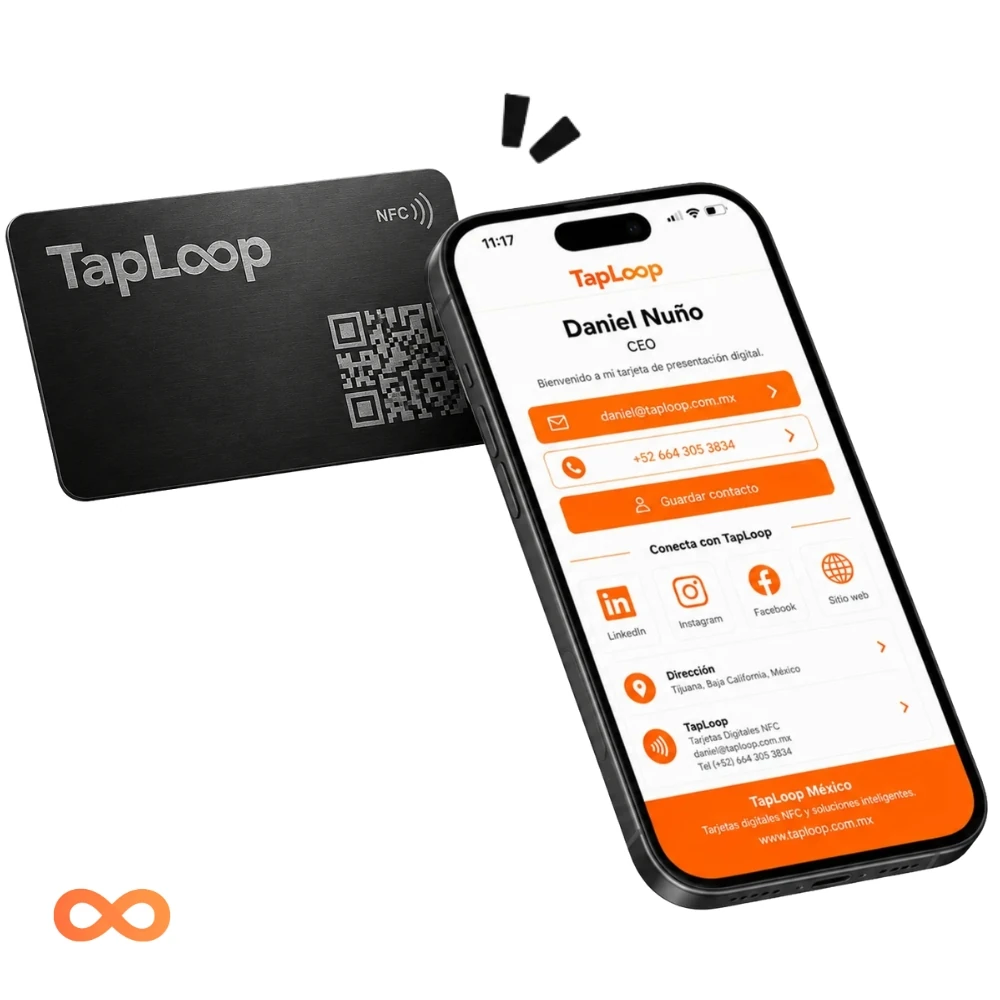
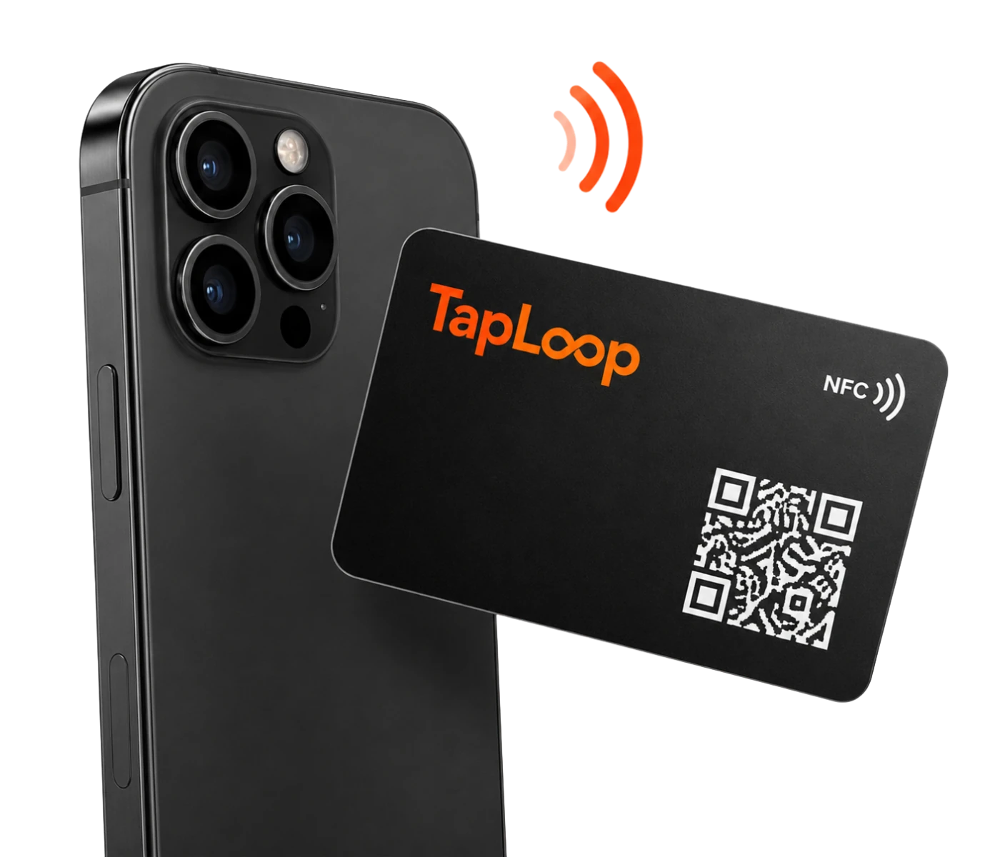
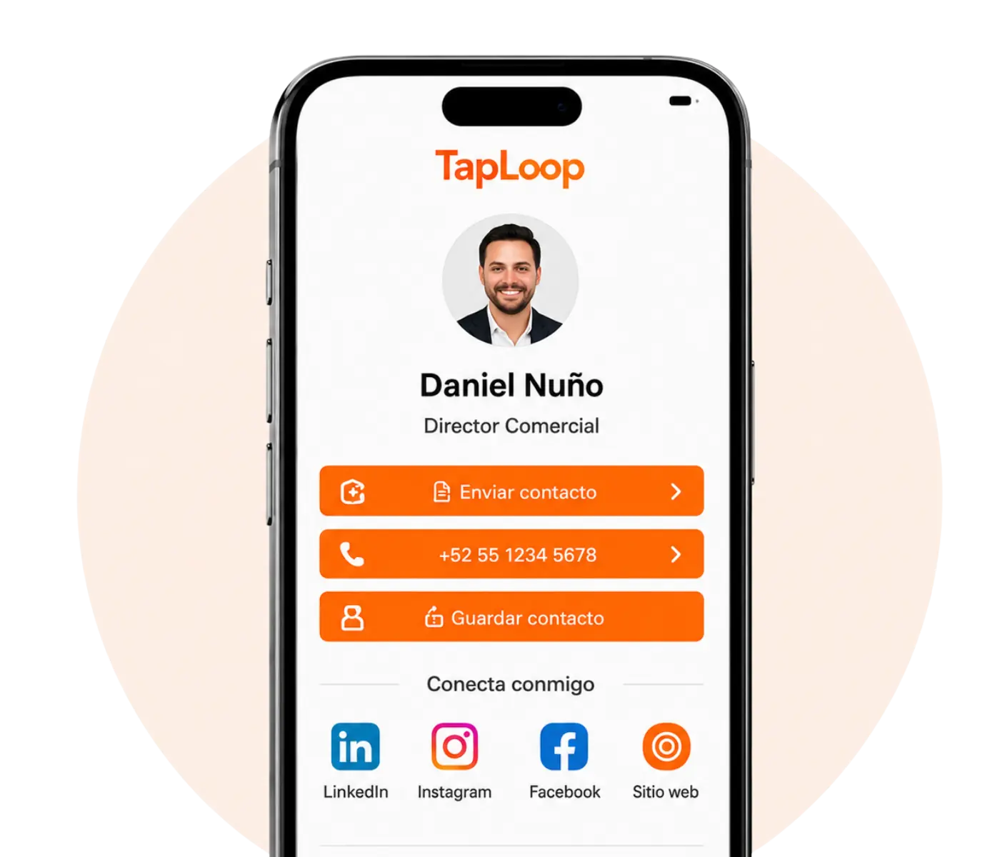
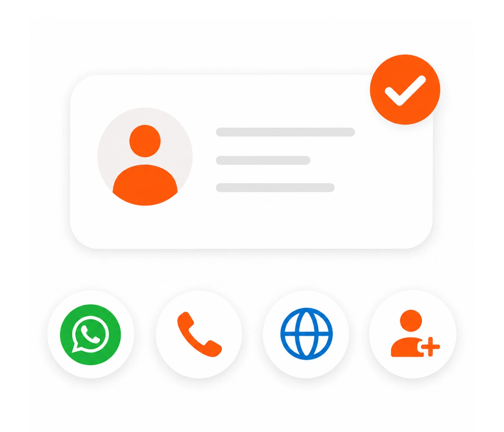
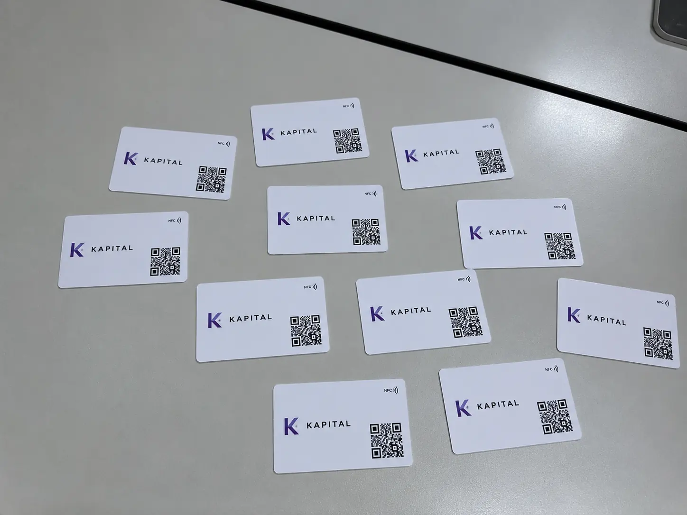
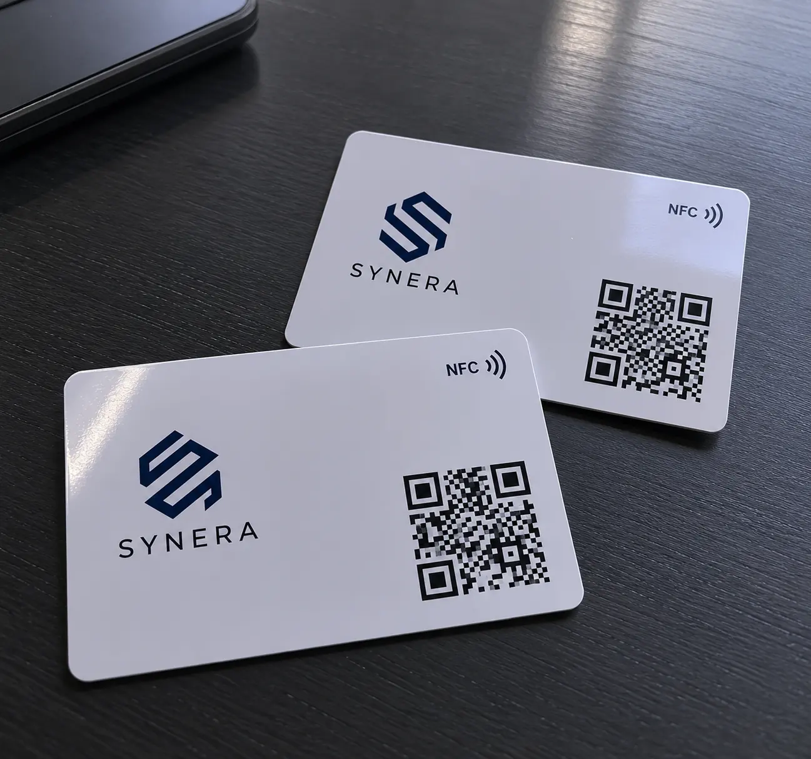
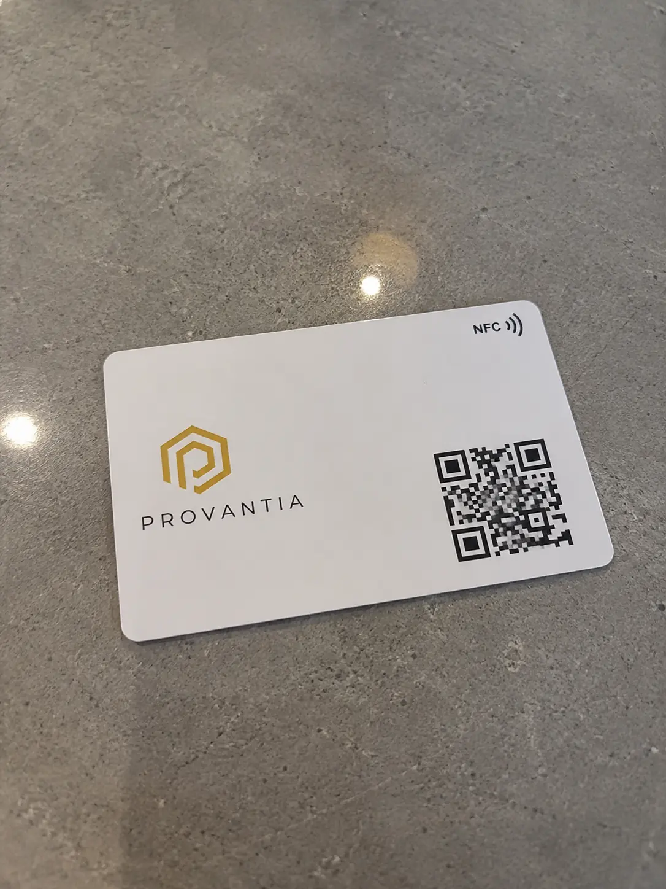

Acabado metálico premium
Una tarjeta con mayor presencia para directivos, consultores, socios y marcas personales.

Tarjeta NFC metálica premium + Perfil digital
Tarjeta de presentación metálica NFC con perfil digital personalizado, diseñada para directivos, socios, consultores y reuniones donde la primera impresión importa.
Tarjeta metálica premium para compartir tu contacto, WhatsApp, redes y sitio web con un solo toque. Diseñada para ejecutivos, consultores, marcas personales y equipos que quieren causar una primera impresión de alto impacto.
Hecha para impresionar sin explicar demasiado. Una tarjeta que se siente mejor en mano y un perfil digital que hace más fácil conectar y dar seguimiento.
Enviamos a todo México por DHL. El tiempo estimado de entrega es de 5 a 7 días hábiles. Recibes guía de rastreo y acompañamiento para dejar tu tarjeta lista.
Después de solicitar tu cotización, un agente de TapLoop te guiará de inicio a fin para personalizar tu tarjeta con nombre, logo, colores, cargo, QR y enlaces de tu perfil digital. El proceso es rápido, claro y ágil.
Tarjeta de presentación metálica NFC
La tarjeta NFC metálica TapLoop combina un acabado premium con un perfil digital personalizado. Comparte contacto, WhatsApp, redes, sitio web y enlaces por NFC o código QR, sin necesidad de que la otra persona instale una aplicación.
Una tarjeta con mayor presencia para directivos, consultores, socios y marcas personales.
Dos formas de abrir el mismo perfil digital desde teléfonos compatibles.
Integra tus datos, WhatsApp, correo, redes sociales, sitio web, ubicación y presentación.
Diseñamos, programamos y enviamos tus tarjetas NFC listas para usar.
Logo, datos de contacto, enlaces y cantidad de tarjetas.
Iniciar mi propuestaRecibes propuestas originales de tarjeta NFC y perfil digital.
Pulimos el diseño contigo hasta dejarlo listo para producción.
Probamos el NFC, verificamos el QR y enviamos la tarjeta lista para usar.
Cómo la utiliza el cliente
La otra persona solo acerca su teléfono o escanea el código QR para abrir tu perfil digital y guardar tu contacto al instante.
O permite que escaneen el código QR de tu tarjeta.

El teléfono muestra tu perfil con botones de contacto, redes y enlaces.

Tu cliente puede guardar tu contacto, enviarte WhatsApp o visitar tu sitio web.

Reseñas
Ideal para reuniones ejecutivas, ventas de alto valor y marcas personales que cuidan cada detalle.

★★★★★"Cada vez que voy a un pitch alguien me pregunta por la tarjeta. Se siente premium y ayuda a que mi marca se recuerde."
Iván CastañedaFundador de agencia creativa
★★★★★"Para un servicio donde la confianza y la presentación cuentan, la metálica hace una diferencia clara desde el primer contacto."
Luis HerreraConsultor fiscal
★★★★★"La uso en reuniones y ferias de talento. Se siente moderna, cuidada y facilita compartir mi perfil profesional."
Daniela PonceHeadhunterDetalles clave sobre la tarjeta NFC Digital Metálica.
La tarjeta metálica ofrece mayor peso, presencia y un acabado premium. La opción PVC es más ligera y práctica para uso diario o implementaciones de mayor volumen.
Sí. Incluye chip NFC programado y código QR para abrir el mismo perfil digital desde teléfonos compatibles.
Sí. El diseño se adapta a tu logo, nombre, cargo, código QR y estilo visual, y el perfil digital incluye tus datos y enlaces.
Sí. Según la solución contratada, puedes actualizar los datos y enlaces del perfil digital sin reemplazar la tarjeta metálica.
Sí. Podemos crear una línea visual corporativa y personalizar cada tarjeta y perfil con los datos de directivos, socios o colaboradores clave.
El tiempo estimado es de 5 a 7 días hábiles después de validar el diseño y los datos finales. El plazo puede variar según la cantidad y el destino.
Cuéntanos qué acabado y diseño buscas para preparar una propuesta premium para tu marca.